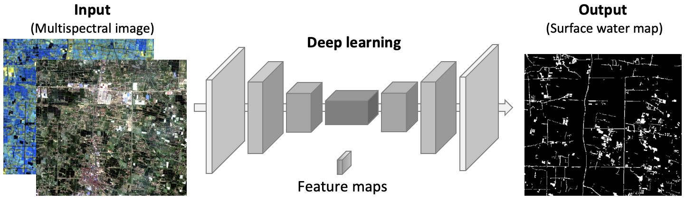

Hi, I am Xin Luo. I received my Ph.D. degree from Tongji University in 2019, and now I am an associate professor in the School of Earth Sciences at Yunnan University. My research interests include remote sensing techniques (e.g., multispectral/hyperspectral image processing and SAR/Lidar altimetry data processing), and the machine learning/deep learning techniques, and the the applications in hydrology and cryosphere.
2022.7.22 --> Geographical field practice teaching for undergraduated students (Field work).
2021.12.1 --> A paper was published on the JAG journal (Publishments).
WatNet: Deep learning for surface water mapping on Sentinel-2 images.
[Paper
Dataset
Code]. 